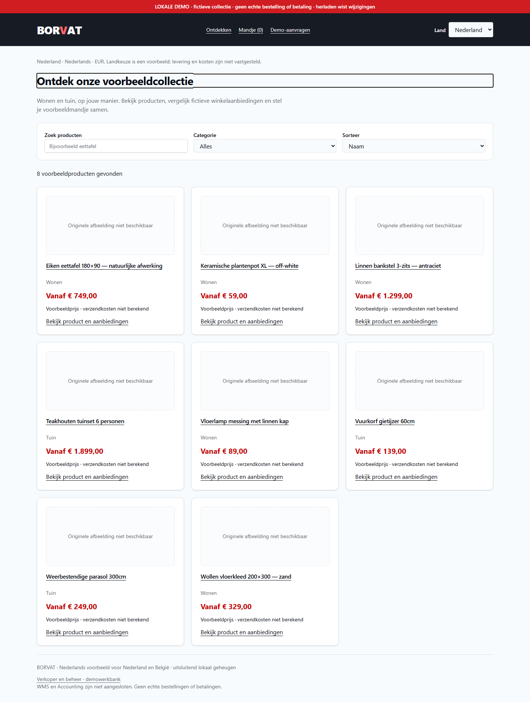
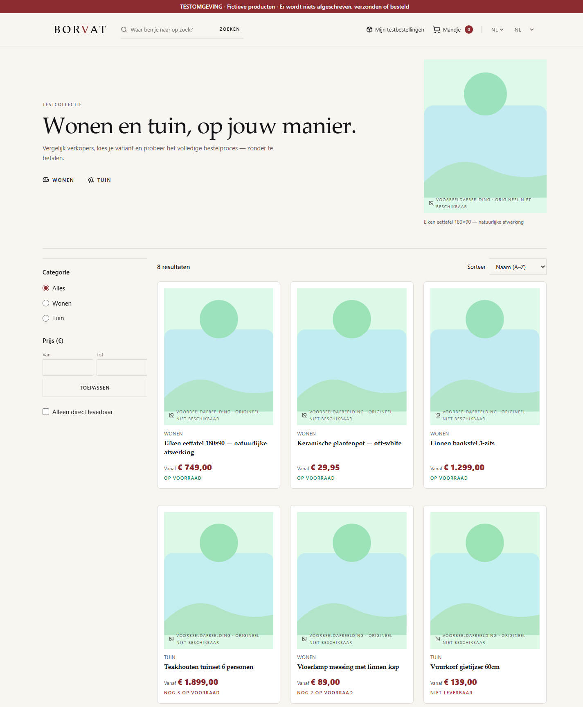

الفرع design/premium-storefront-20261102 عند 113162f · لقطات فعلية من متصفح Chromium · 2026-11-02


| Before (staging) | After (الفرع) | |
|---|---|---|
| عنوان الصفحة الرئيسية | Ontdek onze voorbeeldcollectie | Wonen en tuin, op jouw manier. |
| خط العنوان | Inter · 30px | Iowan Old Style · 56px سطح المكتب / 32px هاتف |
| خلفية الصفحة | oklch(0.985 0.005 240) رمادي بارد | oklch(0.972 0.006 83) ورق دافئ |
عدد عناصر .brv-eyebrow | 0 | 1 |
| حزمة JS المخدومة | بناء staging القديم | /assets/index-AMFiCIQy.js من بناء 113162f |